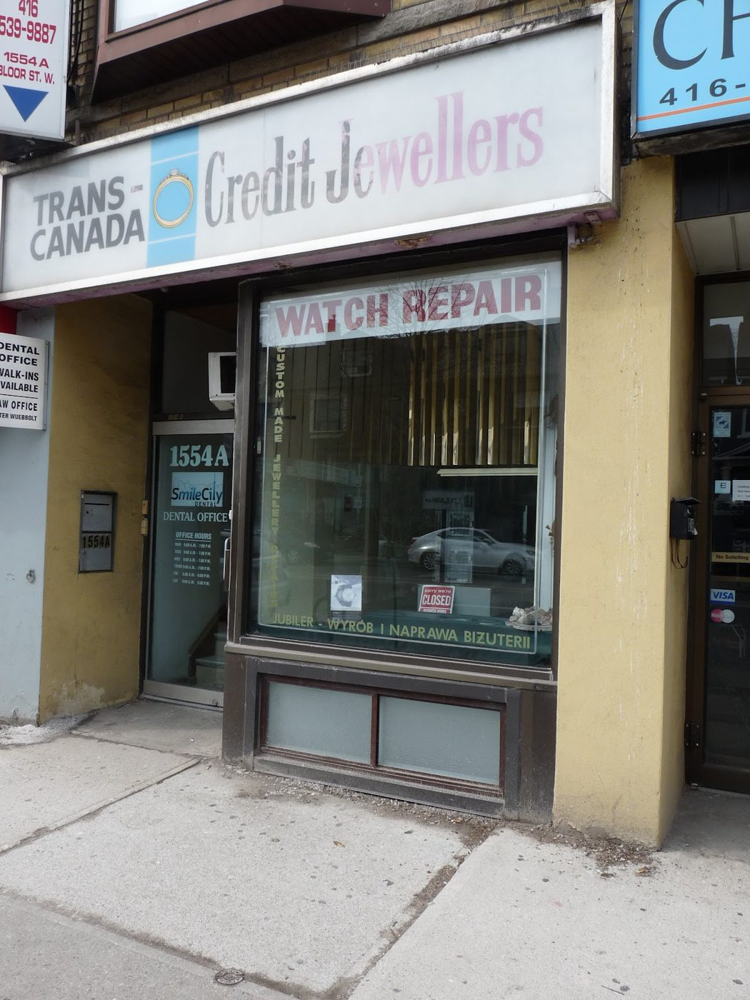
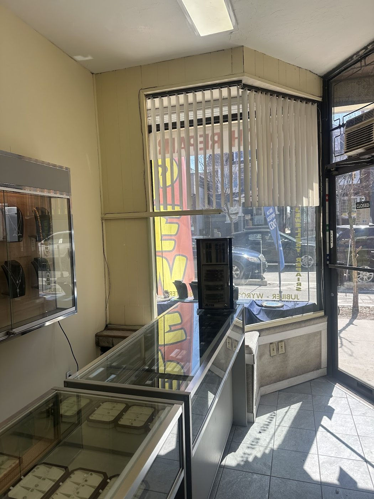

Bloor by the Park · Toronto
Watch and jewellery repair on Bloor West
Trans-Canada Credit Jewellers is a small shop at 1554 Bloor St W. The window says watch repair and custom-made jewellery. Reviewers come in for batteries, crystals, clasps and ring sizing, and many say the work is finished while they wait.
- Watch repair
- Jewellery repair
- Custom-made jewellery
- Often while you wait
What the shop does
Watch repair
Google lists the shop as a jeweler, a watch repair service and a watch store. The window sign says “Watch Repair.” Reviewers describe battery changes, a new watch crystal done the same day, and other watch work.
Jewellery repair
Reviewers mention clasp repairs and ring sizing. A window line in Polish, “Jubiler – wyrób i naprawa biżuterii,” is jewellery making and repair.
Custom-made jewellery
The shop window itself says “Custom Made Jewellery.” One reviewer writes about a custom engagement ring made here years ago, later brought back for cleaning and polishing.
These services are taken from the shop’s own signs and from customer reviews on the Google listing, read Nov 20, 2026. The shop does not publish a service menu or prices, and none are listed here.

A one-window shop on Bloor
The shop sits at 1554 Bloor St W, in the Bloor by the Park stretch near Dundas West. There is no website on the Google listing. If you need a battery, a clasp, a resize or a repair, the most direct route is to call or walk in during opening hours.
Reviewers name the person at the counter in different ways, so this page does not add a name of its own. The quotes below are left as the reviewers wrote them.
What customers say
4.9 ★ from 75 Google reviews (checked Nov 20, 2026). Quotes are word for word. Each one says where it was read: on the Google listing itself, or on a public page that copies reviews.
★★★★★
Go no where else for your watch repairs. Mario is an absolute pro and a gem of a human. He is honest, kind and insanely knowledgeable. He put new batteries in 3 of my watches within minutes and put new crystal on one of my watch faces same day! Incomparable service!!!
★★★★★
Had a wonderful experience with Marius! He replaced the battery in my watch and repaired the clasp on my necklace with a beautiful 14K gold clasp, all while I waited. He was very kind, knowledgeable, and reasonably priced. It was also lovely to chat with him about Poland. I’m very happy to have found such a wonderful local jeweler and will definitely be back. Highly recommend! 🇵🇱✨
★★★★★
Been going there for over a decade. Very humble, knowledgeable and fair. Got a custom engagement ring 10 years ago, still looks amazing after cleaning and polishing it. Very fair prices, highly recommend
Inside and on the street
Real photos from the shop’s public Google listing and from customer reviews. A listing photo that showed a receipt with prices was left out. Tap to enlarge.
Visit the shop
1554 Bloor St W
Toronto, ON M6P 1A4
| Monday | 10 a.m.–6 p.m. |
|---|---|
| Tuesday | 10 a.m.–6 p.m. |
| Wednesday | 10 a.m.–6 p.m. |
| Thursday | 10 a.m.–6 p.m. |
| Friday | 10 a.m.–7 p.m. |
| Saturday | 10 a.m.–5 p.m. |
| Sunday | Closed |
Hours are from the Google listing, checked Nov 20, 2026. A Yellow Pages listing for the same address and phone shows later weekday evenings (until 7 p.m. Monday–Thursday), Saturday 9 a.m.–6 p.m., and does not list Sunday. Birdeye matches Google. This page uses Google. Please call if you are coming late in the day or on a Sunday.